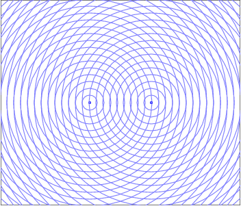
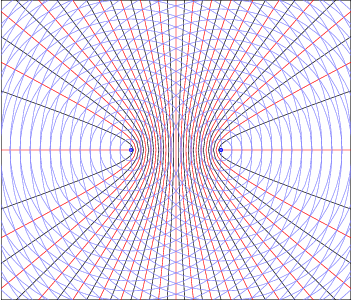
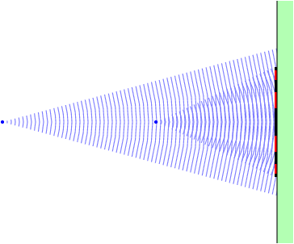
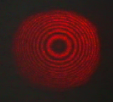

Interferência entre duas ondas coerentes (igual frequência e em fase). As circunferências azuis representam as frentes de onda.
Os pontos onde há interferência construtiva (as duas funções de onda têm o mesmo valor) e onde há interferência destrutiva (funções de onda com valores opostos, anulando-se), permanecem fixos no espaço. No gráfico indica-se a vermelho os pontos de interferência construtiva e a preto os pontos de interferência destrutiva.
No ecrã (a verde) há pontos luminosos (a vermelho) onde há interferência construtiva e pontos escuros, onde há interferência destrutiva.
Cada feixe é um cone e, como tal, as franjas vermelhas no ecrã são realmente círculos concêntricos, como mostra a seguinte fotografia, obtida no laboratório de física da FEUP, usando um raio laser.
